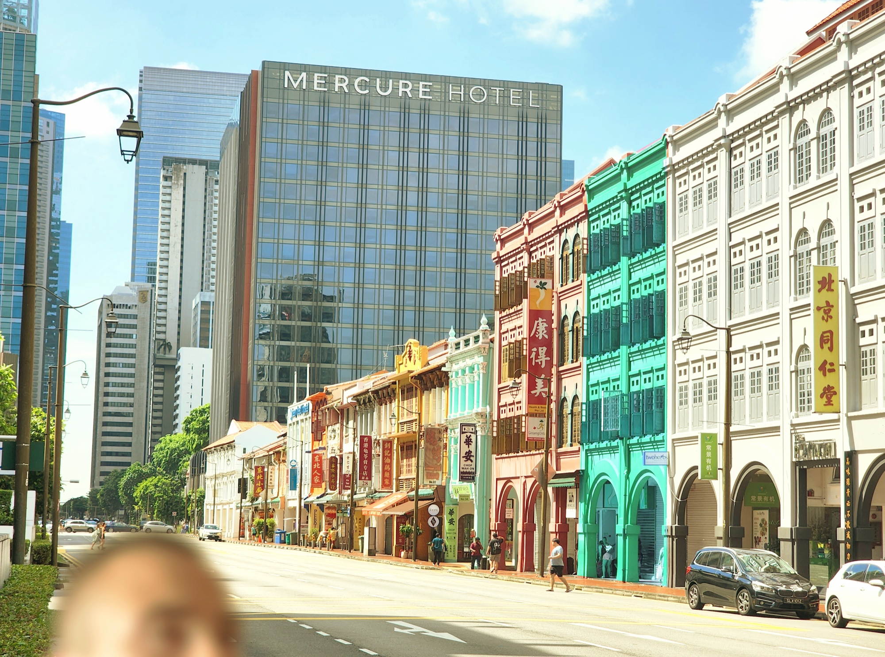
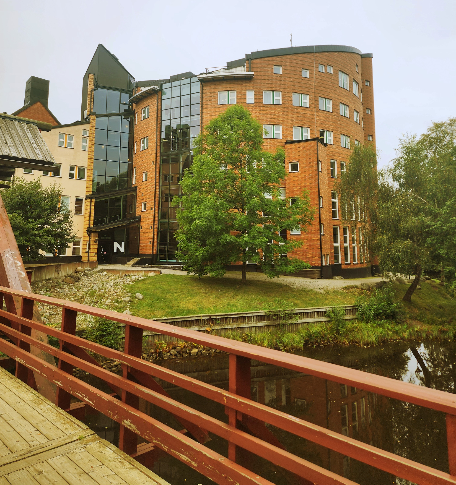

Bilder, färg och form
En plats för nya perspektiv
Det här är Laboration 1.2 i kursen Grafisk teknik för webb. Med temat resor och stadsmiljöer utforskar jag bildredigering och hur färg, bilder och form kan skapa en enhetlig visuell stil.
Fotografierna är redigerade i Photopea. Logotypen och webbplatsens favoritikoner är formgivna i Figma.
Tre motiv · tre bearbetningar
Bilder från stadens rum


